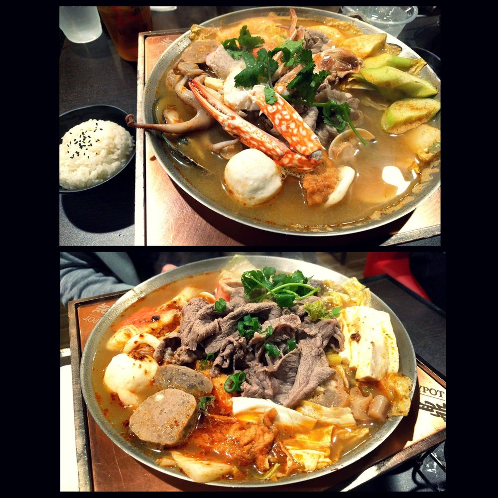

Asian Food in San Diego
Overview
Category
Vietnamese
Korean
Thai
Chinese
Japanese
Filipino
Challenge Level
Easy: "I haven't had this type of food before."
Medium: "People of this culture seem to like this."
Hard: "The natives don't even eat this!?"
Where can I get this delicious food?
Vietnamese
Pho
Challenge Level: Easy
Notable Ingredients: Rice Noodle, Onions, Broth, Cilantro
Optional: Beef, Pork, Chicken, Basil, Bean Sprouts, Jalapenos
Pho Hoang Express
YelpBun Bo Hue
Challenge Level: Medium
Notable Ingredients: Thick Rice Noodles, Pork Blood, Pork Feet, Cilantro, Broth, Spicy
Optional: Cabbage, Banana Flower
Mien Trung
YelpKorean
Sundubu (Soft Tofu Soup)
Challenge Level: Easy
Notable Ingredients: Tofu, Broth, Green Onion
Optional: Beef, Pork, Seafood, or Vegetables
Bibimbap
Challenge Level: Easy
Notable Ingredients: Rice, Bean Sprouts, Cucumber, Carrots, Egg, Korean Broccoli
Optional: Beef, Pork, or Seafood
Friend's House
YelpKorean BBQ
Challenge Level: Easy - Hard
Notable Ingredients (All Optional): Beef Brisket, Beef Sirloin, Pork Belly, Chicken, Vegetables, Shrimp, Squid, Octopus, Beef Tongue, Intestines
Kogi
YelpThai
Pad Thai
Challenge Level: Easy
Notable Ingredients: Rice Noodle, Tamarind Paste, Lime, Chili Pepper, Egg, Peanuts, Fish Sauce, Bean Sprouts, Tofu
Optional: Beef, Pork, Chicken, Seafood
Khao Soi
Challenge Level: Easy
Notable Ingredients: Thick Egg Noodles, Curry Soup
Optional: Beef, Pork, Chicken
Chaba Thai
YelpBoat Noodle
Challenge Level: Medium - Hard
Notable Ingredients: Thick Rice Noodles, Beef Blood, Beef Liver, Beef Meatball, Pork Rinds, Thai Broccoli, Bean Sprouts
Mekong Cuisine Lao and Thai
YelpChinese
Xiao Long Bao
Challenge Level: Easy
Notable Ingredients: Pork, Green Onions
Shanghai Grilled Pork Buns
Challenge Level: Easy
Notable Ingredients: Pork, Bread, Green Onions
Tasty Noodle
YelpPersonal Hot Pot
Challenge Level: Easy - Hard
Notable Ingredients: Broth, Vegetables
Optional: Different combinations of meat and seafood, intestines, stinky tofu
Tasty Pot
YelpJapanese
Hokkaido Ramen
Challenge Level: Easy
Notable Ingredients: Egg Noodles, Pork Broth, Naruto (Fish Cake), Wood Ear Mushrooms
Optional: Pork, Egg
Santouka
YelpYakitori
Challenge Level: Easy - Hard
Notable Ingredients (All Optional): Vegetables, Beef Sirloin, Beef Tongue, Pork Belly, Chicken Skin, Chicken Liver, Chicken Heart, Chicken Gizzard, Chicken Crown, Quail Egg
Yokohama Yakitori Kobou
YelpFilipino
Lumpia

Challenge Level: Easy
Notable Ingredients: Pork
Lechon
Challenge Level: Easy
Notable Ingredients: Pork
Dinuguan
Challenge Level: Hard
Notable Ingredients: Pork, Pork Organs, Pork Blood, Vinegar, Jalapenos
Balut
Challenge Level: Hard++
Notable Ingredients: Duck Fetus